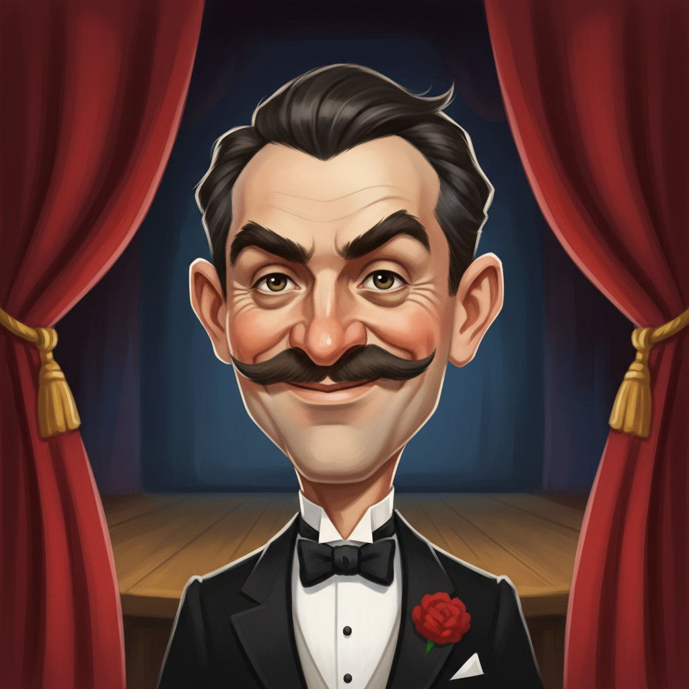

Escapismo
Harry Houdini
Hungría / Estados Unidos
El escapista más famoso de la historia. Revolucionó el ilusionismo con sus fugas imposibles y su capacidad para convertir la magia en espect…
Un mago cada día · Biografías, fotos y datos de magos de todo el mundo
Hungría / Estados Unidos
El escapista más famoso de la historia. Revolucionó el ilusionismo con sus fugas imposibles y su capacidad para convertir la magia en espect…
España
Referente mundial de la magia de cerca y la cartomagia. Creador del método Mnemonics y divulgador de la magia en televisión española.
Estados Unidos
Ilusionista de grandes ilusiones y uno de los magos más taquilleros de la historia. Famoso por hacer «desaparecer» la Estatua de la Libertad…
Canadá
«El hombre que engañó a Houdini». Maestro de la magia de cerca y la cartomagia; influyó en generaciones de magos en Estados Unidos.
Estados Unidos
Dúo que combina magia, humor negro y desenmascaramiento. Actúan en Las Vegas y en televisión; a veces revelan el truco y aun así sorprenden.

Francia
Considerado el padre de la magia moderna. Relojero y creador de autómatas; llevó la magia del escenario de ferias al teatro elegante.
Estados Unidos
Ilusionista de estilo oscuro y televisivo. Conocido por «Mindfreak» y su residencia en Luxor (Las Vegas); mezcla magia, riesgo y espectáculo…
España
Arturo de Ascanio es el teórico de la magia española por excelencia. Sus escritos sobre misdirection, timing y estructura del efecto son ref…
Canadá / Estados Unidos
Ganador de America's Got Talent (2018). Especialista en cartomagia visual y manipulación silenciosa con música; estilo cinematográfico.
Estados Unidos
Mago, historiador y actor. Experto en cartomagia, lanzamiento de naipes y rarezas del espectáculo; colaboró con David Mamet y en cine.
Reino Unido
Mentalista y ilusionista británico. Combina sugestión, psicología y teatro; niega poderes sobrenaturales y explica la psicología detrás de l…
Estados Unidos
Ilusionista clásico de escenario. Residió más de 15 años en el Monte Carlo (Las Vegas) con un show elegante de palomas, cartas y grandes ilu…